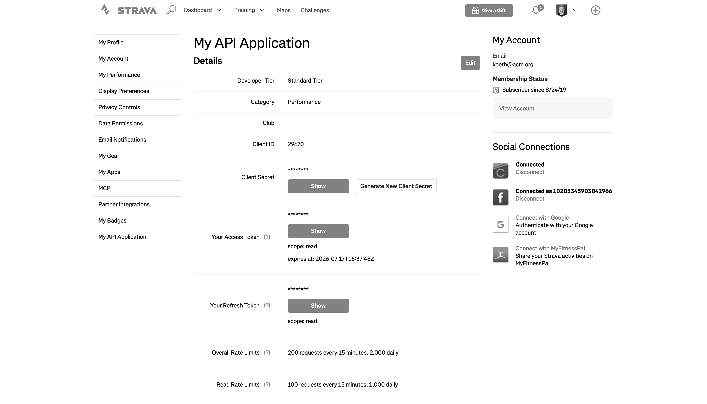
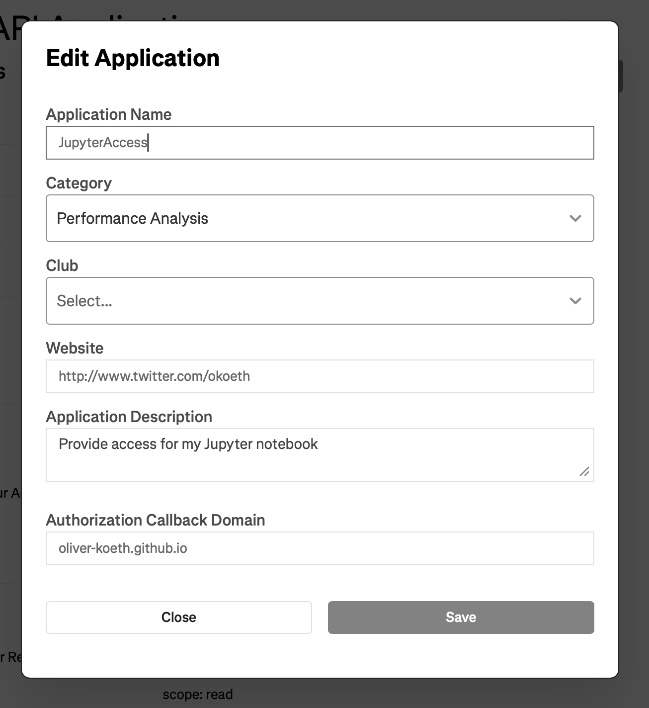
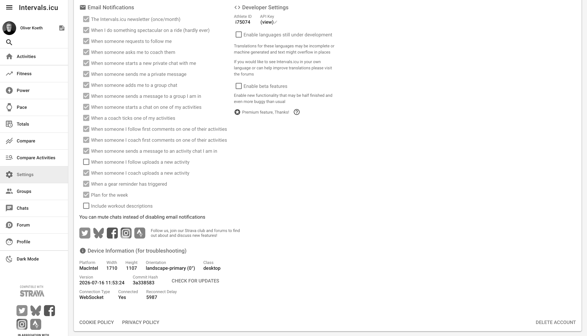
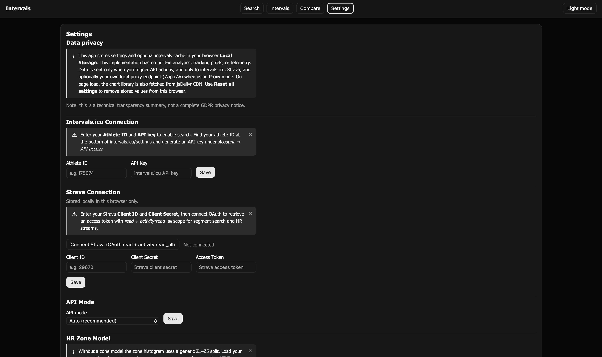
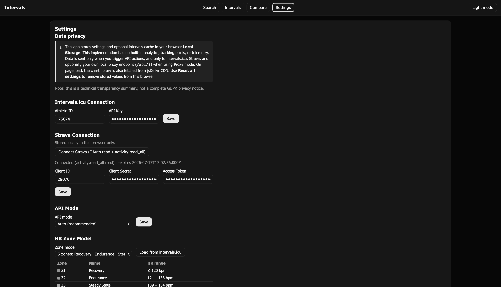
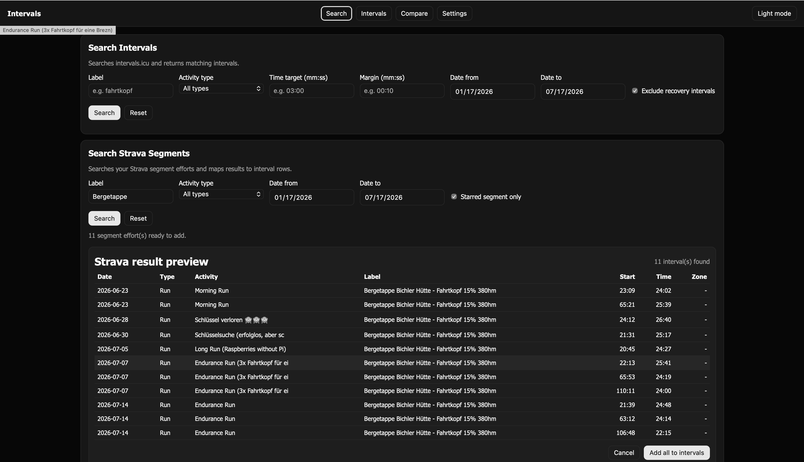
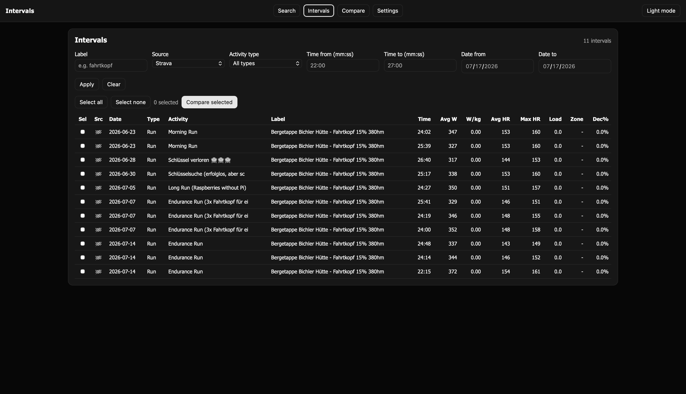
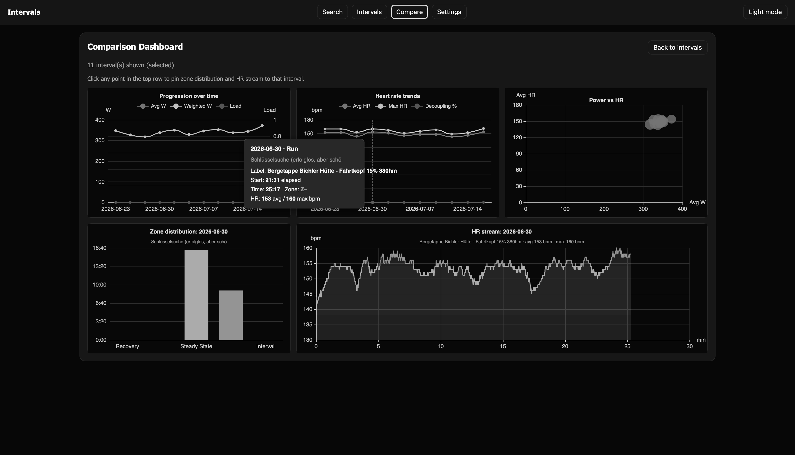

Search Intervals
Searches intervals.icu and returns matching intervals.
Search Strava Segments
Searches your Strava segment efforts and maps results to interval rows.
Intervals
| Sel | Src | Date | Type | Activity | Label | Time | Avg W | W/kg | Avg HR | Max HR | Load | Zone | Dec% |
|---|
Comparison Dashboard
Click any point in the top row to pin zone distribution and HR stream to that interval.
HR diagnostics (copy/paste)
No interval selected yet.
Settings
Data privacy
/api/*) when using Proxy mode.
On page load, the chart library is also fetched from
jsDelivr CDN.
Use Reset all settings to remove stored values from this browser.
Note: this is a technical transparency summary, not a complete GDPR privacy notice.
Intervals.icu Connection
Strava Connection
Stored locally in this browser only.
API Mode
HR Zone Model
Manual
This guide explains setup and usage from configuration to comparison. Click any screenshot thumbnail to open the full-size image.
1. Configuration first
Before searching, collect your connection data from Strava and Intervals.icu.
Strava
Open Strava API settings,
click Edit, and set Authorization Callback Domain to
oliver-koeth.github.io.
Then note: Client ID, Client Secret, Access Token, Refresh Token.
{kind=link}

{kind=link}

Intervals.icu
Open intervals.icu settings, scroll to Developer Settings, and note your Athlete ID and API Key.
{kind=link}

2. Enter settings in Intervals SPA
In Settings, fill Intervals.icu and Strava fields, click Save, then Connect Strava. If needed, set OAuth Redirect URI to exactly the callback URL from your Strava app.
{kind=link}

{kind=link}

3. Search and save results
Use Search Intervals or Search Strava Segments, review preview results, then click Add all to intervals to store them in your browser.
{kind=link}

4. Work with stored intervals
On the Intervals page, apply filters, select rows, and click Compare selected.
{kind=link}

5. Compare in dashboard
In Compare, click a top-chart point to pin the lower charts (zone distribution and HR stream) to one interval.
{kind=link}

Quick summary
- Get Strava and Intervals.icu credentials.
- Save credentials in Settings and connect Strava.
- Optionally load HR zones.
- Search, preview, and add results to Intervals.
- Filter, select, and compare intervals.